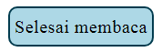

Klasifikasi Materi dan Perubahannya

Petunjuk aplikasi
Petunjuk
Media
Perhatikan gambar dibawah ini!

Keterangan:
- Nomor 1 adalah tombol navigasi untuk materi, jika ditekan maka akan muncul pilihan materi yang tersedia
- Nomor 2 adalah tujuan dari materi yang sedang tampil, itu juga merupakan tombol jika ditekan maka isi dari tujuan akan hilang
- Nomor 3 adalah tombol navigasi dari bagian materi yang sedang tampil, jika ditekan maka akan berpindah ke bagian materi selanjutnya
- Nomor 4 adalah tombol untuk kembali ke menu utama media pembelajaran
- Pada bagian 'Mari mengamati' terdapat video demonstrasi dari materi pembelajaran
- Setelah menonton video, maka akan muncul kesimpulan atau materi pembelajaran dari video tersebut
- Pada bagian kesimpulan terdapat tombol . Ketika tombol tersebut ditekan maka akan tampil pertanyaan
Media Pembelajaran ini dibuat Untuk Memenuhi Persyaratan dalam Menyelesaikan Program Strata-1 Pendidikan Komputer dengan judul:
PENGEMBANGAN MEDIA PEMBELAJARAN INTERAKTIF BERBASIS WEB PADA PEMBELAJARAN KLASIFIKASI MATERI DAN PERUBAHANNYA UNTUK SISWA SMP KELAS VII DENGAN METODE DEMONSTRASI
| Nama | : | Widodo setio sejati |
| : | widodosetio56@gmail.com | |
| Dosen Pembimbing 1 | : | Dr. Harja Santanapurba, M.Kom. |
| Dosen Pembimbing 2 | : | Dr. Andi Ichsan Mahardika, M.Pd. |
| Program Studi | : | S1 Pendidikan Komputer |
| Fakultas | : | Keguruan dan Ilmu Pendidikan |
| Instansi | : | Universitas Lambung Mangkurat |